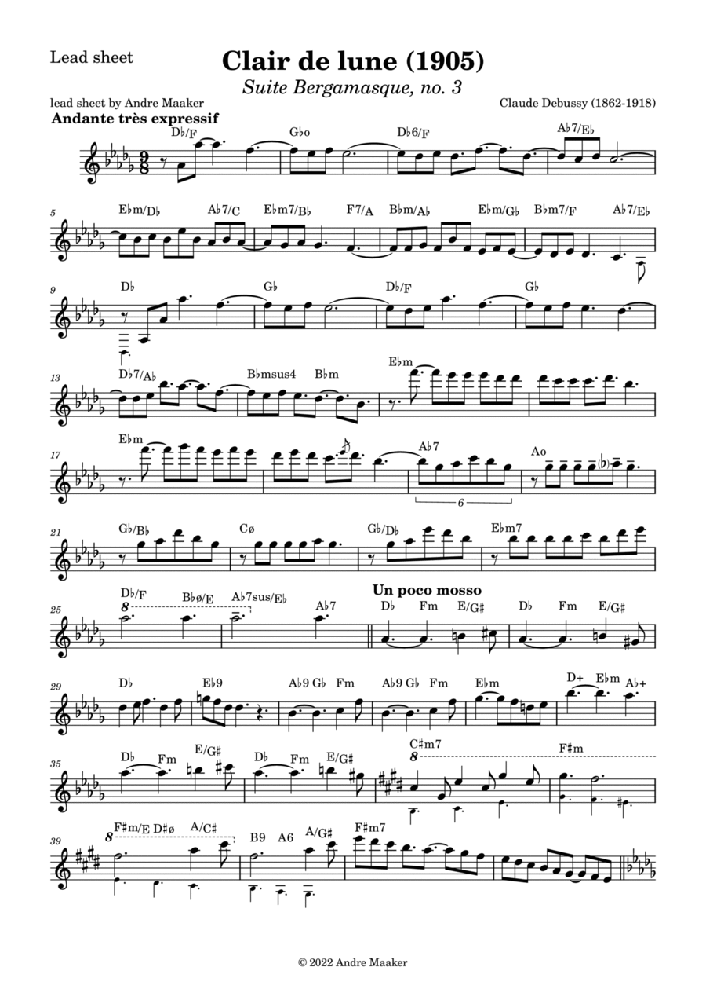
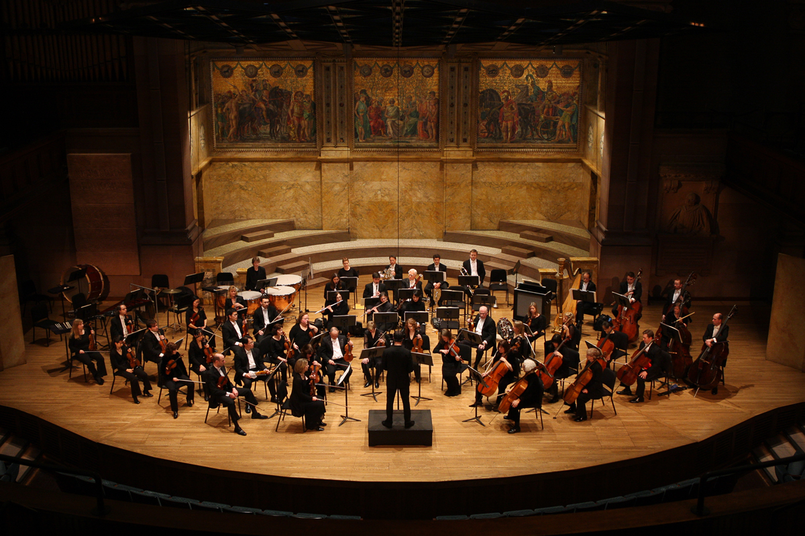
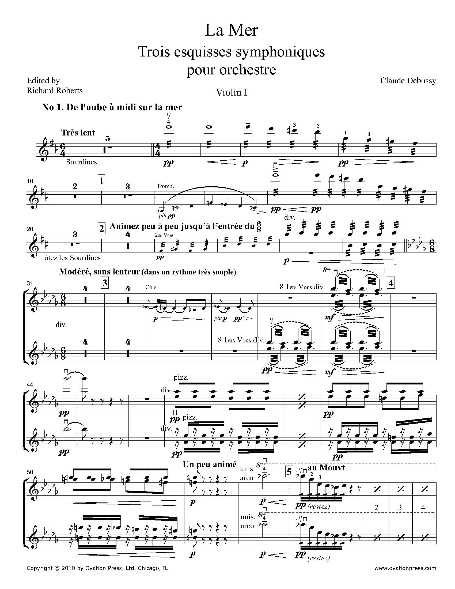

A closer look at some of Debussy’s most important compositions.

This piece, from the Suite Bergamasque, is one of Debussy’s most iconic piano works. Gentle, flowing melodies and soft dynamics evoke the serene glow of moonlight. The use of non-traditional scales, subtle pedal effects, and free rhythm embodies Debussy’s impressionistic style. Clair de Lune demonstrates his ability to create mood through texture rather than formal structure.

Orchestral performances reveal Debussy’s innovative coloristic approach.

La Mer is a three-movement orchestral piece that captures the essence of the sea. Debussy employs unique textures, fluid dynamics, and coloristic orchestration to evoke waves, storms, and sunlight. The work’s form is less conventional, focusing on musical imagery and impression rather than strict thematic development. Completed in 1905, La Mer solidified Debussy’s reputation as a revolutionary composer of orchestral tone painting.